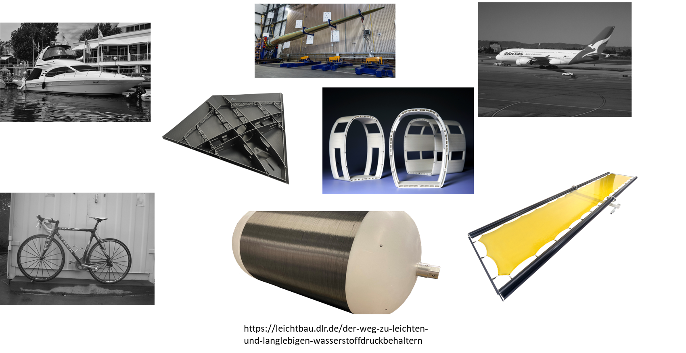
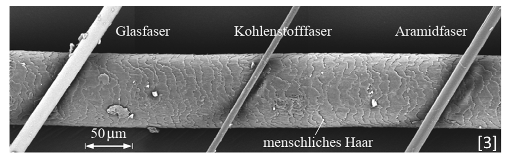
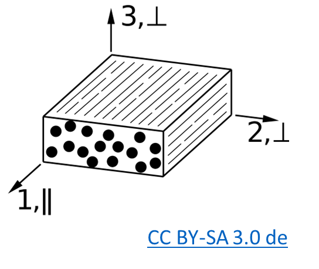

Verbundwerkstoffe
Figure is based on this paper Figure 2.
Anwendungen

| Gebiet | Motivation |
|---|---|
| Luft- und Raumfahrt | Festigkeits/Steifigkeits – Gewichtsverhältnis, Schadens- und Korrosionsstoleranz, Wartbarkeit / Reparierbarkeit |
| Schifffahrt | Salzwasser; Schlagschäden, Lange Lebendauer |
| Bauwesen | Widerstand gegen Umwelteinflüsse und Korrosion; Langlebigkeit |
| Landtransportsysteme | Kosten, Einfache Fertigbarkeit |
Komponenten von Faserkunstoffverbunde
Matrix – bindende Komponente
- Formgebend
- Schutz und Stabilisierung der Fasern
- Spannungen an die Fasern übertragen
Faser – verstärkende Komponente
- Lasttragend da hohe Steifigkeit und/oder - Festigkeit bei geringem Gewicht
- Begrenzte thermische Dehnung
Weitere Bestandteile (optional)
- Faserbeschichtungen
- Füllstoffe
- Beimischung anderer Fasertypen
Ausgangswerkstoffe - Faser
- Kurzfasern
- Wirre Anordnung (geringe Anistropie)
- Oft recyclete Fasern
- Langfasern
- Mehrere Millimeter Länge
- Geringere Anforderung bei Verarbeitung und Lagerung
- Endlosfasern
- Hohe Festigkeiten und Steifigkeiten
- Höhere Anforderung bei Verarbeitung und Lagerung
- Naturfasern: Haare, Wolle, Seide, Baumwolle, Flachs, Sisal, Hanf, Jute, Ramie, Bananenfasern ...
- Organische Fasern: Polyethylen (PE), Polypropylen (PP), Polyamid (PA), Polyester (PES), Polyacrylnitril (PAN), Aramid, Kohlenstoff ...
- Anorganische Fasern: Glas, Basalt, Quarz, SiC, Al2O3, Bor, ...
Metallfasern aus: Stahl, Aluminium, Kupfer, Nickel, Beryllium, Wolfram ...

Koordinaten

Eigenschaften
| Material | $E_{f,11}\,[N/mm^2]$ | $E_{m}\,[N/mm^2]$ | $E_{11}\,[N/mm^2]$ |
|---|---|---|---|
| E-Glasfaser | 73000 | 3400 | 45160 |
| HT-C-Faser | 230000 | 3400 | 139960 |
| HM-C-Faser | 392000 | 3400 | 236560 |
| Aramamid | 125000 | 3400 | 76360 |
| Stahl 25CrMo4 | 206000 | ||
| Aluminium-Legierung AlCuMg2 | 72400 | ||
| Titan-Legierung | 108000 |
Faservolumenanteil
\[\rho = \phi\rho_f+(1-\phi)\rho_m\]
- Prozessabhängig

\[A_{Quadrat} = (2R)^2 = 4\cdot R^2\]
\[A_{Kreis} = \pi R^2\]
\[\rho_{f,max}=\frac{A_{Kreise}}{A_{Quadrat}}=\frac{\pi}{4}\]
quadratische Packung $\phi_{max}=\frac{\pi}{4}\approx 0.79$
hexagonale Packung $\phi_{max}=\frac{\pi}{\sqrt{12}}\approx 0.91$
Glasfasern
Vorteile
- hohe Längs-Zug- sowie die hohe Längs-Druckfestigkeit
- Eine hohe Bruchdehnung
- aufgrund der niedrigen Fasersteifigkeit gute Drapierbarkeit, auch um enge Radien
- die vollkommene Unbrennbarkeit
- die sehr geringe Feuchtigkeitsaufnahme
- die gute chemische und mikrobiologische Widerstandsfähigkeit
- geringe Kosten
Nachteile
- der für viele Strukturbauteile zu niedrige Elastizitätsmodul der Glasfaser
- Glasfasern sind unverrottbar (Vor- und Nachteil)
Kohlefasern
Vorteil
- C-Fasern sind sehr leicht, ihre Dichte ($𝜌_𝑓 ≈ 1.8 g/cm^33$) liegt deutlich unter derjenigen von Glasfasern ($𝜌_𝑓 ≈ 2.54 g/cm^3$).
- extrem hohe Festigkeiten und sehr hohe Elastizitätsmoduln
- beide mechanischen Größen sind zudem in weiten Bereichen bei der Herstellung der Fasern einstellbar
- Exzellente Ermüdungsfestigkeit
Nachteile
- Geringere Druckfestigkeit in Faserrichtung
- Schlechtere Drapierbarkeit
- Kosten
- Elastizitätsmoduln in Faserlängs- und Querrichtung unterscheiden sich um eine Größenordnung (Vor- und Nachteil)
Lagenaufbau
Unidirektional (UD) $[0°]_i$; $[0°]_{10}$;
quasi isotrop $[0°\,+45°\,-45°\,90°]_s$
Biaxiales Gelege $[+60°\,-60°]$, $[+45°\,-45°]_s$
Triaxiales Gelege $[+60°\,-60°\,0°]$
Torsion $[+45°\,-45°]$
beliebig $[0°\,10°\,45°\,90°\,0°]_{22}$